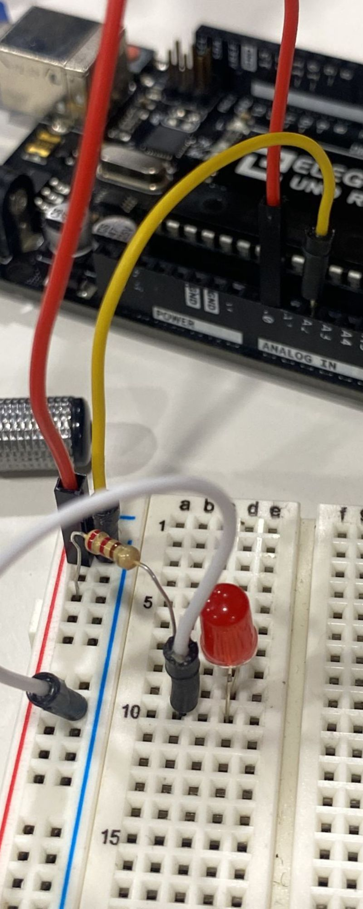

Semana 6
CLASE PRESENCIAL
En esta clase vimos un tema bastante interesante, que es "Fundamentos de la electronica" vimos trmas cruciales como corriente electrica, electrones, átomos, conductores, voltajes, amperios, potencia, todo para llegar a entender mejor como funciona el circuito electrico de los componenetes de potencia. Además para complemnetar la informacion vimos los componentes como Ckto para led, diodo led, resistencia, conocimos como era un protoboard y realizamos nuestra primera practica de como encender un led cor ardruino.